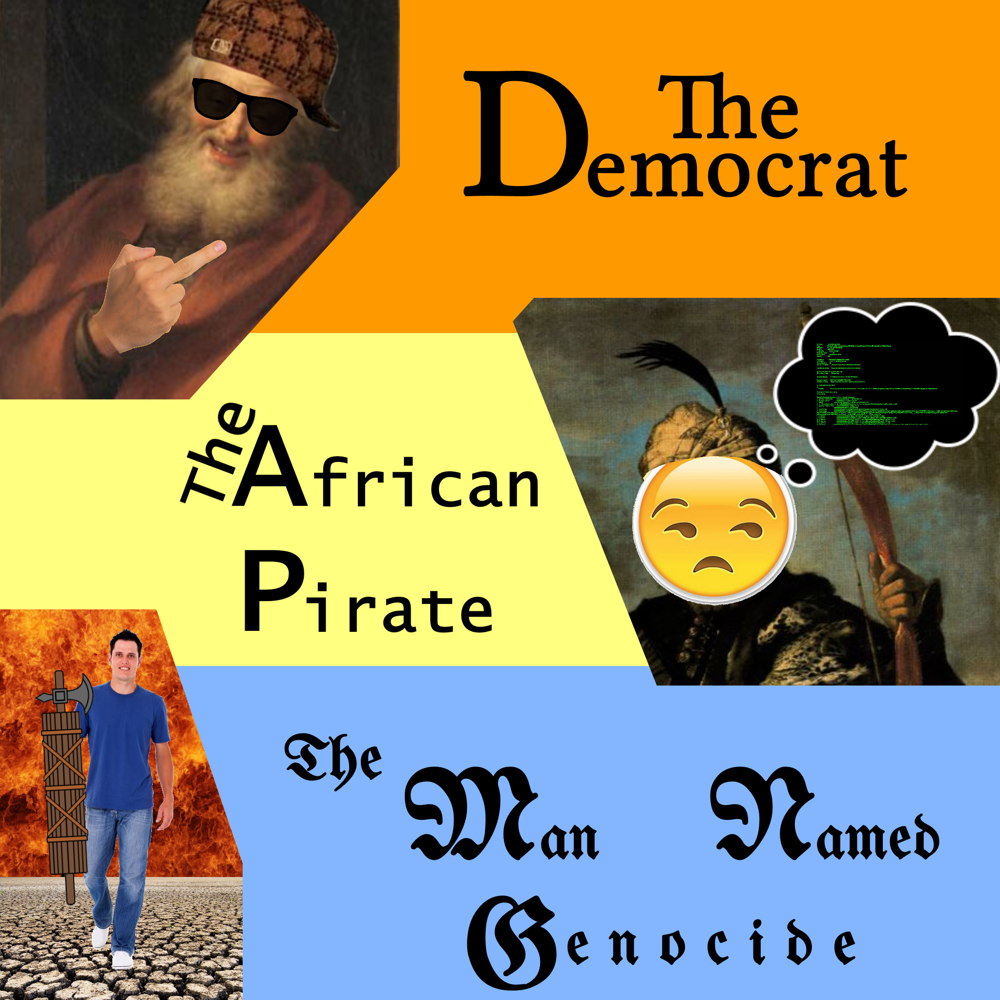
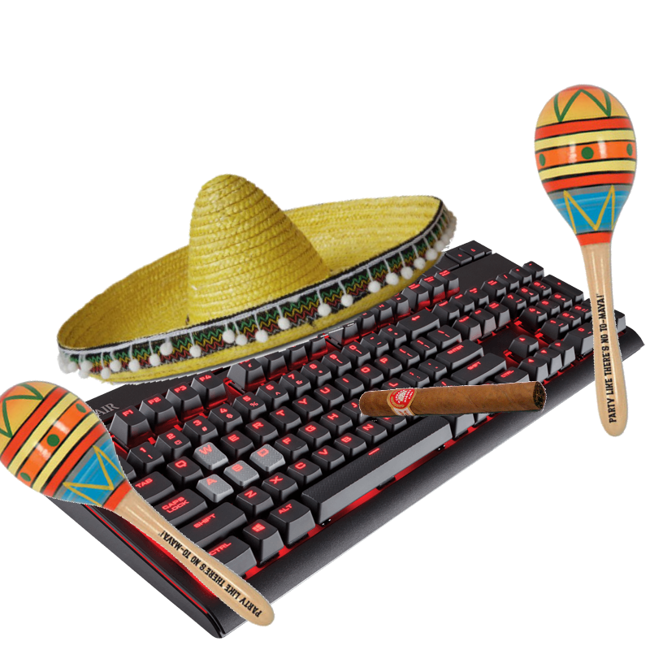

I do image edits for fun, so they are free. Currently the only form of donations I can take rn are commissions, so don't worry about payment XD. Just message me on newgrounds or twitter or something. I'd prefer you to cite me as the artist if you plan on using this somewhere. I do rapid, low-to-medium quality image editing requests. This includes everything from minor antique photo restoration to editing the Queen bulldozing Obama. I'm not good at drawing but I try to satisfy those requests too. Sample of my work:
Request Description: Album Cover - Artist's Discretion. Time Taken: ~30 minutes. Mostly stock images with a few hand-drawn sections.

Request Description: Classical City based on a modern reference. Time Taken: ~45 minutes. About 50/50 Hand-Drawn and Stock Images.
Request Description: "How do you say keyboard in Spanish?" Time Taken: ~2 minutes. Entirely derived from Stock Images.